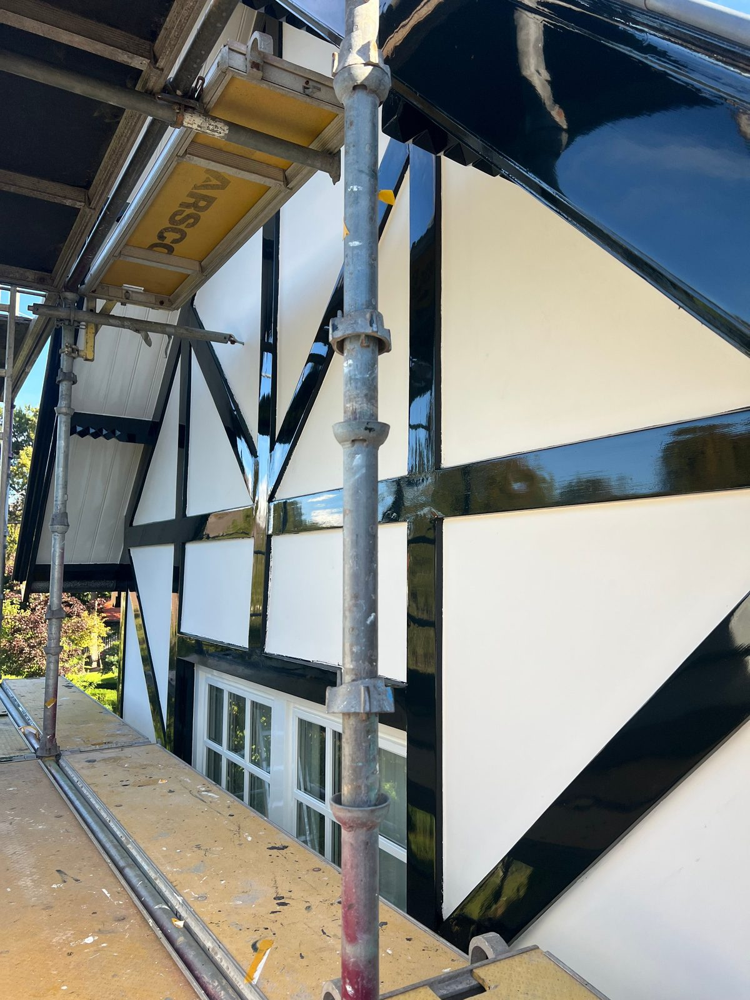
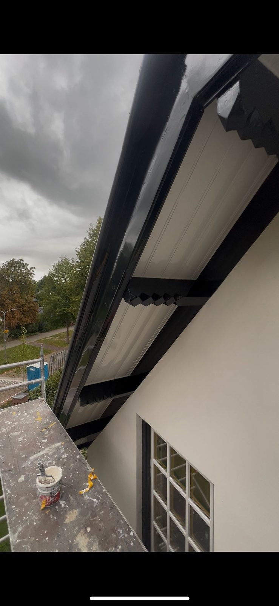
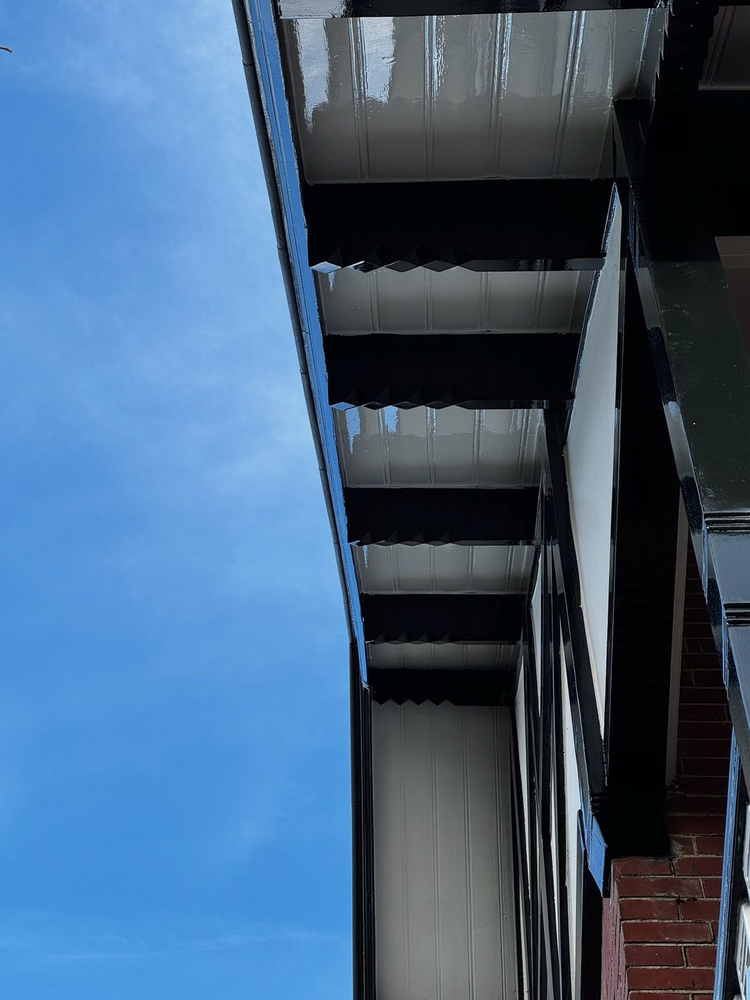
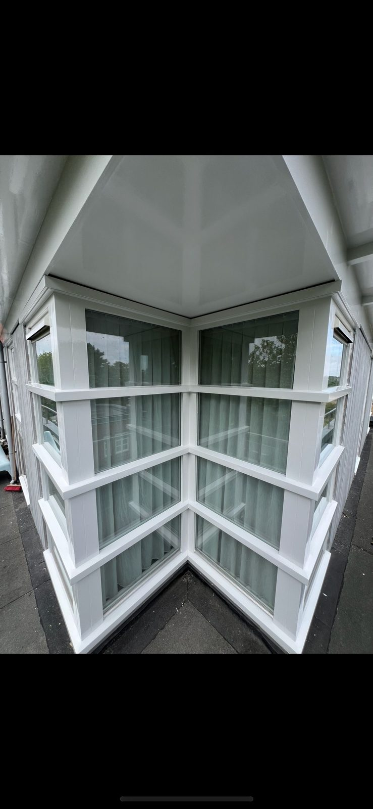
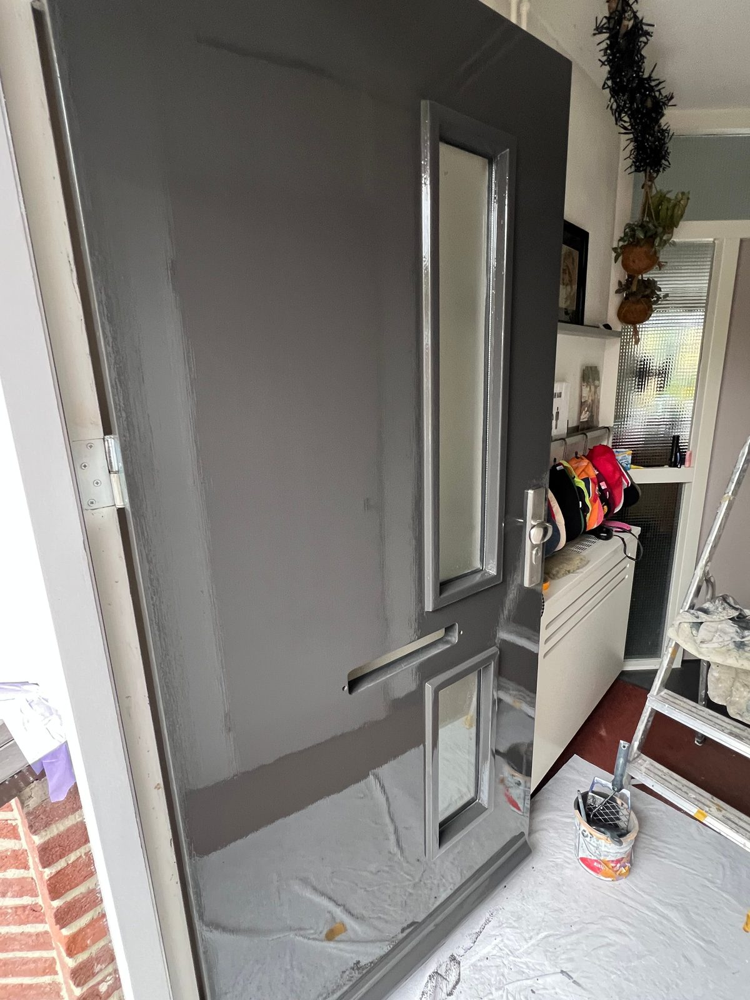
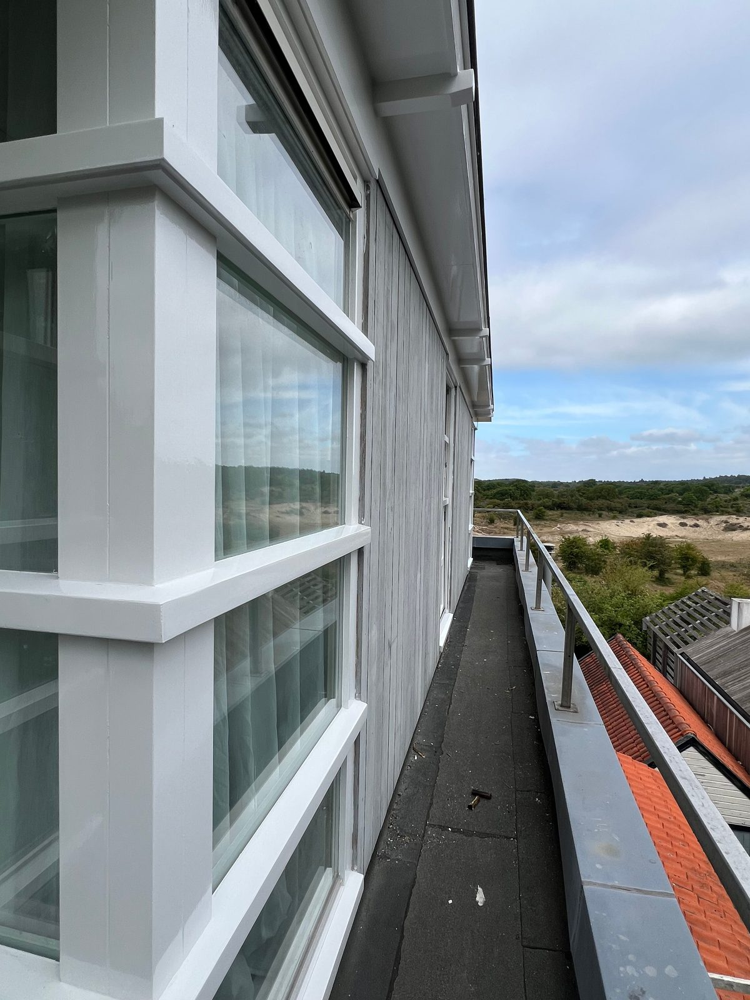
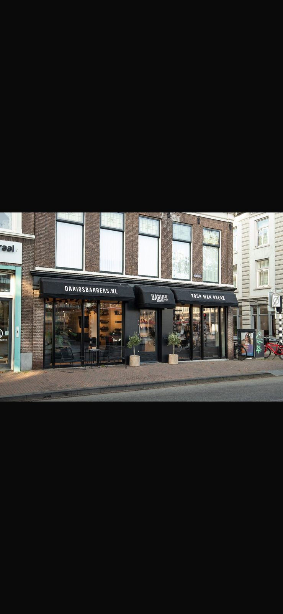

Portfolio
Werk uit de praktijk
Een selectie van uitgevoerde projecten — van klassieke villa's tot dakkapellen, voordeuren en commerciële panden.











Commercieel werk
Bedrijfspanden in de regio
